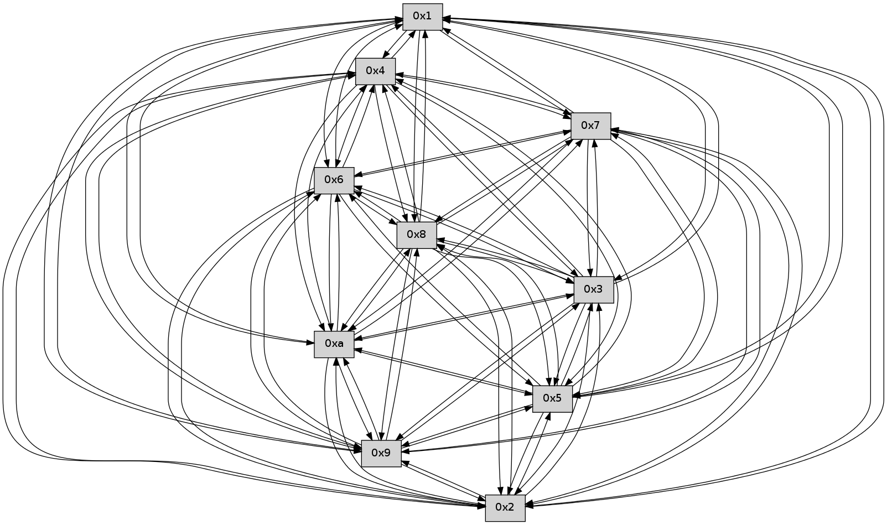

>> << IDX [start] -100 -25 -5 +0 +5 +25 +100 [455.180119038]
 Previous packets
----------------------------------------------------------------------
450.451329 beacon01(faad) #0 coord=01,02,03,04,05,06,07,0a,09,08 cycle=688.0ms assoc
-- color-indic=0 64 51 d5
450.461313 beacon02(faad) #0 coord=01,02,03,04,05,06,07,0a,09,08 cycle=688.0ms assoc 64 c2 e4
450.471311 beacon03(faad) #0 coord=01,02,03,04,05,06,07,0a,09,08 cycle=688.0ms assoc 64 b8 a9
450.481312 beacon04(faad) #0 coord=01,02,03,04,05,06,07,0a,09,08 cycle=688.0ms assoc 64 cf 43
450.491313 beacon05(faad) #0 coord=01,02,03,04,05,06,07,0a,09,08 cycle=688.0ms assoc 64 b5 0e
450.501312 beacon06(faad) #0 coord=01,02,03,04,05,06,07,0a,09,08 cycle=688.0ms assoc 64 3b d9
450.511312 beacon07(faad) #0 coord=01,02,03,04,05,06,07,0a,09,08 cycle=688.0ms assoc 64 41 94
450.521318 beacon0a(faad) #0 coord=01,02,03,04,05,06,07,0a,09,08 cycle=688.0ms assoc 64 30 9f
450.531318 beacon09(faad) #0 coord=01,02,03,04,05,06,07,0a,09,08 cycle=688.0ms assoc 64 be 48
450.541317 beacon08(faad) #0 coord=01,02,03,04,05,06,07,0a,09,08 cycle=688.0ms assoc 64 c4 05
450.552489 [Hello(5): seq=291 sym=7,6,4,3,1,9,8,10,2 sysInfo= stat=7:9,0,0,0/6:13,0,0,0/4:9,0,0,0/3:2,0,0,0/1:7,0,0,0/9:11,0,0,0/8:15,0,0,0/10:6,0,0,0/2:12,0,0,0]
450.555143 [Hello(4): seq=291 sym=5,7,6,2,3,9,8,10,1 sysInfo= stat=5:6,0,0,0/7:12,0,0,0/6:1,0,0,0/2:9,0,0,0/3:0,0,0,0/9:10,0,0,0/8:4,0,0,0/10:2,0,0,0/1:6,0,0,0]
450.558049 [Hello(10): seq=223 sym=6,3,2,8,9,5,7,4,1 sysInfo= stat=6:3,0,0,0/3:11,0,0,0/2:3,0,0,0/8:0,0,0,0/9:9,0,0,0/5:0,0,0,0/7:9,0,0,0/4:10,0,0,0/1:9,0,0,0]
450.561092 [Hello(9): seq=234 sym=5,2,3,4,7,6,8,10,1 sysInfo= stat=5:0,0,0,0/2:6,0,0,0/3:4,0,0,0/4:3,0,0,0/7:0,0,0,0/6:10,0,0,0/8:3,0,0,0/10:12,0,0,0/1:15,0,0,0]
450.563757 [Hello(3): seq=291 sym=1,7,6,2,4,8,9,10,5 sysInfo= stat=1:15,0,0,0/7:3,0,0,0/6:15,0,0,0/2:12,0,0,0/4:15,0,0,0/8:11,0,0,0/9:6,0,0,0/10:14,0,0,0/5:0,0,0,0]
450.568592 [Hello(2): seq=288 sym=4,5,7,6,3,9,8,10,1 sysInfo= stat=4:2,0,0,0/5:0,0,0,0/7:8,0,0,0/6:13,0,0,0/3:14,0,0,0/9:8,0,0,0/8:10,0,0,0/10:14,0,0,0/1:4,0,0,0]
450.578286 [Hello(8): seq=234 sym=5,2,3,4,7,6,9,10,1 sysInfo= stat=5:15,0,0,0/2:6,0,0,0/3:3,0,0,0/4:6,0,0,0/7:15,0,0,0/6:6,0,0,0/9:13,0,0,0/10:11,0,0,0/1:15,0,0,0]
----------------------------------------------------------------------
451.239463 beacon01(faad) #0 coord=01,02,03,04,05,06,07,0a,09,08 cycle=688.0ms assoc
-- color-indic=0 64 95 db
451.249446 beacon02(faad) #0 coord=01,02,03,04,05,06,07,0a,09,08 cycle=688.0ms assoc 64 06 ea
451.259445 beacon03(faad) #0 coord=01,02,03,04,05,06,07,0a,09,08 cycle=688.0ms assoc 64 7c a7
451.269445 beacon04(faad) #0 coord=01,02,03,04,05,06,07,0a,09,08 cycle=688.0ms assoc 64 0b 4d
451.279446 beacon05(faad) #0 coord=01,02,03,04,05,06,07,0a,09,08 cycle=688.0ms assoc 64 71 00
451.289444 beacon06(faad) #0 coord=01,02,03,04,05,06,07,0a,09,08 cycle=688.0ms assoc 64 ff d7
451.299446 beacon07(faad) #0 coord=01,02,03,04,05,06,07,0a,09,08 cycle=688.0ms assoc 64 85 9a
451.309450 beacon0a(faad) #0 coord=01,02,03,04,05,06,07,0a,09,08 cycle=688.0ms assoc 64 f4 91
451.319450 beacon09(faad) #0 coord=01,02,03,04,05,06,07,0a,09,08 cycle=688.0ms assoc 64 7a 46
451.329463 beacon08(faad) #0 coord=01,02,03,04,05,06,07,0a,09,08 cycle=688.0ms assoc 64 00 0b
451.340602 [Hello(6): seq=291 sym=2,3,5,4,7,9,8,10,1 sysInfo= stat=2:11,0,0,0/3:15,0,0,0/5:6,0,0,0/4:15,0,0,0/7:1,0,0,0/9:3,0,0,0/8:11,0,0,0/10:8,0,0,0/1:8,0,0,0]
451.343949 [Hello(7): seq=291 sym=2,3,5,6,4,8,9,10,1 sysInfo= stat=2:12,0,0,0/3:10,0,0,0/5:12,0,0,0/6:8,0,0,0/4:7,0,0,0/8:0,0,0,0/9:15,0,0,0/10:8,0,0,0/1:9,0,0,0]
451.353839 [Hello(1): seq=200 sym=4,2,9,5,10,3,8,6,7 sysInfo= stat=4:13,0,0,0/2:5,0,0,0/9:5,0,0,0/5:0,0,0,0/10:3,0,0,0/3:9,0,0,0/8:4,0,0,0/6:11,0,0,0/7:3,0,0,0]
----------------------------------------------------------------------
452.027594 beacon01(faad) #0 coord=01,02,03,04,05,06,07,0a,09,08 cycle=688.0ms assoc
-- color-indic=0 64 29 de
452.037576 beacon02(faad) #0 coord=01,02,03,04,05,06,07,0a,09,08 cycle=688.0ms assoc 64 ba ef
452.047577 beacon03(faad) #0 coord=01,02,03,04,05,06,07,0a,09,08 cycle=688.0ms assoc 64 c0 a2
452.057577 beacon04(faad) #0 coord=01,02,03,04,05,06,07,0a,09,08 cycle=688.0ms assoc 64 b7 48
452.067576 beacon05(faad) #0 coord=01,02,03,04,05,06,07,0a,09,08 cycle=688.0ms assoc 64 cd 05
452.077577 beacon06(faad) #0 coord=01,02,03,04,05,06,07,0a,09,08 cycle=688.0ms assoc 64 43 d2
452.087577 beacon07(faad) #0 coord=01,02,03,04,05,06,07,0a,09,08 cycle=688.0ms assoc 64 39 9f
452.097582 beacon0a(faad) #0 coord=01,02,03,04,05,06,07,0a,09,08 cycle=688.0ms assoc 64 48 94
452.107582 beacon09(faad) #0 coord=01,02,03,04,05,06,07,0a,09,08 cycle=688.0ms assoc 64 c6 43
452.117582 beacon08(faad) #0 coord=01,02,03,04,05,06,07,0a,09,08 cycle=688.0ms assoc 64 bc 0e
452.132396 [Hello(2): seq=289 sym=4,5,7,6,3,9,8,10,1 sysInfo= stat=4:2,0,0,0/5:0,0,0,0/7:9,0,0,0/6:14,0,0,0/3:14,0,0,0/9:8,0,0,0/8:11,0,0,0/10:14,0,0,0/1:5,0,0,0]
452.136167 [Hello(5): seq=292 sym=7,6,4,3,1,9,8,10,2 sysInfo= stat=7:10,0,0,0/6:14,0,0,0/4:10,0,0,0/3:3,0,0,0/1:8,0,0,0/9:12,0,0,0/8:0,0,0,0/10:7,0,0,0/2:13,0,0,0]
452.139878 [Hello(8): seq=235 sym=5,2,3,4,7,6,9,10,1 sysInfo= stat=5:15,0,0,0/2:6,0,0,0/3:3,0,0,0/4:6,0,0,0/7:0,0,0,0/6:7,0,0,0/9:13,0,0,0/10:11,0,0,0/1:0,0,0,0]
452.143083 [Hello(3): seq=292 sym=1,7,6,2,4,8,9,10,5 sysInfo= stat=1:0,0,0,0/7:4,0,0,0/6:0,0,0,0/2:13,0,0,0/4:15,0,0,0/8:12,0,0,0/9:6,0,0,0/10:14,0,0,0/5:0,0,0,0]
452.146101 [Hello(10): seq=224 sym=6,3,2,8,9,5,7,4,1 sysInfo= stat=6:4,0,0,0/3:12,0,0,0/2:4,0,0,0/8:1,0,0,0/9:10,0,0,0/5:0,0,0,0/7:10,0,0,0/4:10,0,0,0/1:10,0,0,0]
----------------------------------------------------------------------
452.815725 beacon01(faad) #0 coord=01,02,03,04,05,06,07,0a,09,08 cycle=688.0ms assoc
-- color-indic=0 64 3d b0
452.825708 beacon02(faad) #0 coord=01,02,03,04,05,06,07,0a,09,08 cycle=688.0ms assoc 64 ae 81
452.835708 beacon03(faad) #0 coord=01,02,03,04,05,06,07,0a,09,08 cycle=688.0ms assoc 64 d4 cc
452.845709 beacon04(faad) #0 coord=01,02,03,04,05,06,07,0a,09,08 cycle=688.0ms assoc 64 a3 26
452.855709 beacon05(faad) #0 coord=01,02,03,04,05,06,07,0a,09,08 cycle=688.0ms assoc 64 d9 6b
452.865709 beacon06(faad) #0 coord=01,02,03,04,05,06,07,0a,09,08 cycle=688.0ms assoc 64 57 bc
452.875708 beacon07(faad) #0 coord=01,02,03,04,05,06,07,0a,09,08 cycle=688.0ms assoc 64 2d f1
452.885714 beacon0a(faad) #0 coord=01,02,03,04,05,06,07,0a,09,08 cycle=688.0ms assoc 64 5c fa
452.895713 beacon09(faad) #0 coord=01,02,03,04,05,06,07,0a,09,08 cycle=688.0ms assoc 64 d2 2d
452.905714 beacon08(faad) #0 coord=01,02,03,04,05,06,07,0a,09,08 cycle=688.0ms assoc 64 a8 60
452.916595 [Hello(1): seq=201 sym=4,2,9,5,10,3,8,6,7 sysInfo= stat=4:13,0,0,0/2:6,0,0,0/9:6,0,0,0/5:1,0,0,0/10:4,0,0,0/3:10,0,0,0/8:5,0,0,0/6:11,0,0,0/7:3,0,0,0]
452.920524 [Hello(6): seq=292 sym=2,3,5,4,7,9,8,10,1 sysInfo= stat=2:12,0,0,0/3:0,0,0,0/5:7,0,0,0/4:0,0,0,0/7:2,0,0,0/9:3,0,0,0/8:12,0,0,0/10:9,0,0,0/1:9,0,0,0]
452.924497 [Hello(7): seq=292 sym=2,3,5,6,4,8,9,10,1 sysInfo= stat=2:13,0,0,0/3:11,0,0,0/5:13,0,0,0/6:8,0,0,0/4:8,0,0,0/8:1,0,0,0/9:15,0,0,0/10:9,0,0,0/1:10,0,0,0]
----------------------------------------------------------------------
453.603857 beacon01(faad) #0 coord=01,02,03,04,05,06,07,0a,09,08 cycle=688.0ms assoc
-- color-indic=0 64 81 b5
453.613840 beacon02(faad) #0 coord=01,02,03,04,05,06,07,0a,09,08 cycle=688.0ms assoc 64 12 84
453.623840 beacon03(faad) #0 coord=01,02,03,04,05,06,07,0a,09,08 cycle=688.0ms assoc 64 68 c9
453.633841 beacon04(faad) #0 coord=01,02,03,04,05,06,07,0a,09,08 cycle=688.0ms assoc 64 1f 23
453.643841 beacon05(faad) #0 coord=01,02,03,04,05,06,07,0a,09,08 cycle=688.0ms assoc 64 65 6e
453.653839 beacon06(faad) #0 coord=01,02,03,04,05,06,07,0a,09,08 cycle=688.0ms assoc 64 eb b9
453.663840 beacon07(faad) #0 coord=01,02,03,04,05,06,07,0a,09,08 cycle=688.0ms assoc 64 91 f4
453.673845 beacon0a(faad) #0 coord=01,02,03,04,05,06,07,0a,09,08 cycle=688.0ms assoc 64 e0 ff
453.683845 beacon09(faad) #0 coord=01,02,03,04,05,06,07,0a,09,08 cycle=688.0ms assoc 64 6e 28
453.693846 beacon08(faad) #0 coord=01,02,03,04,05,06,07,0a,09,08 cycle=688.0ms assoc 64 14 65
453.705641 [Hello(2): seq=290 sym=4,5,7,6,3,9,8,10,1 sysInfo= stat=4:2,0,0,0/5:1,0,0,0/7:10,0,0,0/6:15,0,0,0/3:15,0,0,0/9:8,0,0,0/8:12,0,0,0/10:15,0,0,0/1:6,0,0,0]
453.708982 [Hello(5): seq=293 sym=7,6,4,3,1,9,8,10,2 sysInfo= stat=7:11,0,0,0/6:15,0,0,0/4:10,0,0,0/3:4,0,0,0/1:9,0,0,0/9:12,0,0,0/8:1,0,0,0/10:8,0,0,0/2:13,0,0,0]
453.713079 [Hello(8): seq=236 sym=5,2,3,4,7,6,9,10,1 sysInfo= stat=5:15,0,0,0/2:6,0,0,0/3:4,0,0,0/4:6,0,0,0/7:1,0,0,0/6:8,0,0,0/9:13,0,0,0/10:12,0,0,0/1:1,0,0,0]
453.715505 [Hello(9): seq=236 sym=5,2,3,4,7,6,8,10,1 sysInfo= stat=5:1,0,0,0/2:8,0,0,0/3:6,0,0,0/4:3,0,0,0/7:2,0,0,0/6:12,0,0,0/8:5,0,0,0/10:13,0,0,0/1:1,0,0,0]
453.719482 [Hello(3): seq=293 sym=1,7,6,2,4,8,9,10,5 sysInfo= stat=1:1,0,0,0/7:5,0,0,0/6:1,0,0,0/2:13,0,0,0/4:15,0,0,0/8:12,0,0,0/9:6,0,0,0/10:15,0,0,0/5:0,0,0,0]
453.723469 [Hello(10): seq=225 sym=6,3,2,8,9,5,7,4,1 sysInfo= stat=6:5,0,0,0/3:12,0,0,0/2:4,0,0,0/8:1,0,0,0/9:10,0,0,0/5:0,0,0,0/7:11,0,0,0/4:10,0,0,0/1:11,0,0,0]
----------------------------------------------------------------------
454.391987 beacon01(faad) #0 coord=01,02,03,04,05,06,07,0a,09,08 cycle=688.0ms assoc
-- color-indic=0 64 45 bb
454.401970 beacon02(faad) #0 coord=01,02,03,04,05,06,07,0a,09,08 cycle=688.0ms assoc 64 d6 8a
454.411969 beacon03(faad) #0 coord=01,02,03,04,05,06,07,0a,09,08 cycle=688.0ms assoc 64 ac c7
454.421970 beacon04(faad) #0 coord=01,02,03,04,05,06,07,0a,09,08 cycle=688.0ms assoc 64 db 2d
454.431970 beacon05(faad) #0 coord=01,02,03,04,05,06,07,0a,09,08 cycle=688.0ms assoc 64 a1 60
454.441971 beacon06(faad) #0 coord=01,02,03,04,05,06,07,0a,09,08 cycle=688.0ms assoc 64 2f b7
454.451972 beacon07(faad) #0 coord=01,02,03,04,05,06,07,0a,09,08 cycle=688.0ms assoc 64 55 fa
454.461975 beacon0a(faad) #0 coord=01,02,03,04,05,06,07,0a,09,08 cycle=688.0ms assoc 64 24 f1
454.471975 beacon09(faad) #0 coord=01,02,03,04,05,06,07,0a,09,08 cycle=688.0ms assoc 64 aa 26
454.481976 beacon08(faad) #0 coord=01,02,03,04,05,06,07,0a,09,08 cycle=688.0ms assoc 64 d0 6b
454.494126 [Hello(1): seq=202 sym=4,2,9,5,10,3,8,6,7 sysInfo= stat=4:13,0,0,0/2:7,0,0,0/9:6,0,0,0/5:2,0,0,0/10:5,0,0,0/3:11,0,0,0/8:6,0,0,0/6:12,0,0,0/7:4,0,0,0]
454.497423 [Hello(6): seq=293 sym=2,3,5,4,7,9,8,10,1 sysInfo= stat=2:13,0,0,0/3:1,0,0,0/5:8,0,0,0/4:0,0,0,0/7:3,0,0,0/9:3,0,0,0/8:13,0,0,0/10:10,0,0,0/1:9,0,0,0]
454.505043 [Hello(7): seq=293 sym=2,3,5,6,4,8,9,10,1 sysInfo= stat=2:14,0,0,0/3:12,0,0,0/5:14,0,0,0/6:8,0,0,0/4:8,0,0,0/8:2,0,0,0/9:15,0,0,0/10:10,0,0,0/1:10,0,0,0]